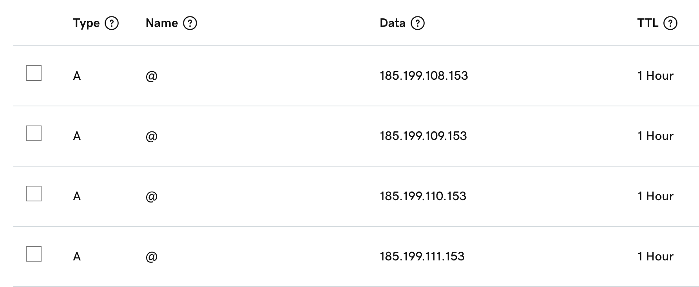
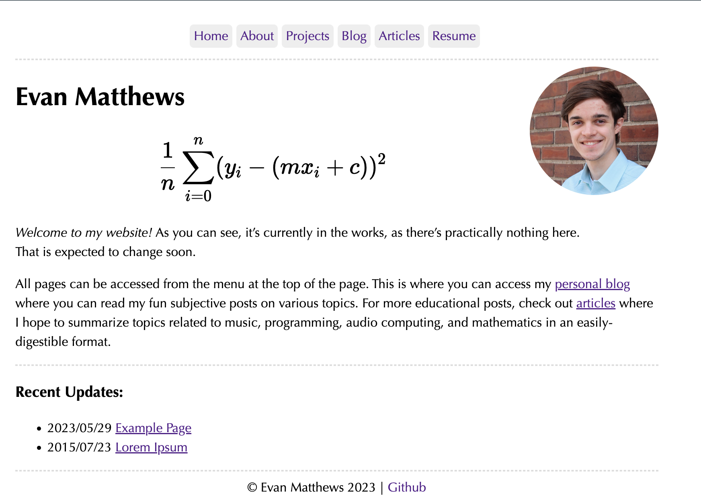

⚠️ This article assumes you have a decent understanding about console commands and Git.
Introduction
I have something rather important to get off my chest:
I don't like web dev.
There, I said it. I've used plenty of tools in the past, including HTML, CSS and Javascript, yet the idea of making websites never truly stuck. To me, there was always an additional layer of complication that I could never get around. However, there are plenty of tools nowadays that get around the tedium of having to type an endless amount of style and formatting code to make a nice-looking website. This article will hopefully introduce you to a number of tools I've been using to make this website and will hopefully stop you from having to touch javascript 🤮 or do any actual web programming.
Step 1: Build your site
Considering that I only needed to create a static site, I ended up choosing Hugo as it felt relatively intuitive to setup and included good documentation for customizing my site further. The instructions for starting your initial website can be found in their quick start guide, but they can be summarized as such:
-
Install Hugo’s extended edition here, and Git if you don’t already have it.
-
make an open a new directory wherever you want your website files stored locally, which can be done with
hugo new site <site-folder> cd <site-folder> -
Initialize a new Git repository with
git init -
Pick a theme (pre-built CSS to forgo actual web-dev) from the Hugo Themes page.

From that theme’s Github page, fork your own copy of the theme (this will be important later), grab the forked repo’s .git link and run this command:
git submodule add <theme-link.git> themes/<theme-name>This adds your chosen theme as a submodule of your repository, and this will allow you to make changes to your theme’s style code later on by commiting and pushing your theme changes to the forked repository:
cd themes/<theme-name> git remote add origin <theme-link.git>You can verify that this folder is within your themes directory by running
git remote -v. -
Finally, make a
config.yamlfile in your website’s root directory, and add the following lines:baseurl: http://example.com theme: <theme-name>Make sure the
<theme-name>is the same as your submodule, otherwise your theme won’t be imported properly by Hugo. Additionally, remember this file for later since you’ll want to change thebaseurlat some point.
Once you’ve completed these steps, you’re ready to begin working on your site! I highly recommend copying all the contents of the ExampleSite folder over to your root directory, as this will provide you with a good template to play around with and understand the structure of your Hugo files. Additional information for customizing your site, such as the use of Hugo-specific variables and functions, can be found in their documentation and are relatively intuitive once you start digging into an ExampleSite.
Otherwise, you’ll likely be your site files from scratch. This can be done by either creating a .md file from either an IDE or terminal using the following command:
(User/website/content:) hugo new <page-name>.md
Side note: markdown offers a number of tags for organizing or describing your pages. In particular, make sure
draftis set to false when you’re ready to publish your website, (otherwise your pages won’t appear on the published site.)
As you’re making your website’s pages, you’ll likely want to check what the pages will look like in real-time. This can be done with:
(User/website:) hugo server
This command builds your pages and runs your website locally. Editing and re-saving files while your website is running locally allows you to see immediate changes to your pages.
Lastly, once you have your first draft of your website ready to publish, you can run:
(User/website:) hugo
This command compiles all your Hugo files together under the public/ folder into a series of HTML and CSS files for hosting and deployment to the world wide web.
Step 2: Host and deploy your site files
Congratulations! You’ve hopefully built your website and gotten your site to successfully compile through Hugo. The next step is to host your files online so they can be accessed by the deployment tool, (which sometimes is also the file hosting tool). A number of services such as Squarespace and GoDaddy offer website building, hosting and deployment as one package for a monthly fee. However, most people (including me) are in the market for free or low-cost services, which is why I opted for Github Pages. This is a service open to anyone with Github Free (essentially everyone) and allows you to host and deploy your site pages publicly. Here’s how to do just that:
-
Hosting: Make a new public repository from Github with the name
<username>.github.io, and push your site repository:(User/website:) git remote add origin https://github.com/<username>/<username>.github.io.get git add . git commit -m "commit message" git push origin main
Note #1: Pushing changes to your
.github.io repository will not include changes to the theme you chose. For that, you must do (User/website:) cd themes/<theme-name> (User/themes/<theme-name>:) git push origin mainwhere items in parentheses simply show where in your directory the commands take place. As you’ve done here, this
git pushwill update your forked repository with the changes you wanted deployed to the theme of your site.
Note #2: The above is not the only way to push your website code to Github, but regardless, your repository on Github must be named
<username.github.io>in order for Github Pages to work.
Note #3: Did you remember to call
(User/website:) hugobefore pushing your site code to Github?
- Deployment: Head over to
https://github.com/<username>/<username>.github.io/actionsand create a new workflow. You’ll want to pick the static HTML preset, then while configuring the file:-
Remove all the existing code and paste this file which can also be found on Hugo’s Host on Github tutorial.
-
Keep in mind that you may need to change
HUGO_VERSIONunderjobs/build/envto your version of Hugo, which you can find by doing:hugo versionThis will be of the form
#.###.#for the purpose of the .yaml file. -
After creating the workflow, go to
https://github.com/<username>/<username>.github.io/settings/pages. Under Build and Deployment, chooseGithub Actions, and manually select the workflow you just created if necessary.
-
If you did this all correctly, you should find your website deployed at https://<username>.github.io. If you’re happy with that domain, feel free to leave the tutorial and enjoy your new website! Otherwise, you’ll likely want a more professional domain to go with your newly published site…
Step 3: Connecting a custom domain
Now that you’ve built and hosted/deployed your website, it’s time to change the domain! Ideally, you’ll want something short and simple so that it’s easily memorizable (and potentially recognizable), like one of these examples:
evanm.comevan-matthews.orgfunnyhat.netematth.dev
There are plenty of services for purchasing a custom domain. For my purposes, I used godaddy.com which also included tools for creating and hosting my website if I felt so inclined.
For the remainder of this tutorial, Github’s documentation on custom domains will be a very helpful resource. The steps will be:
-
Wherever you choose to purchase your custom domain, head to your
DNS Records/Settings, and add the following records:
Type Name Data A @ 185.199.108.153 A @ 185.199.109.153 A @ 185.199.110.153 A @ 185.199.111.153 CNAME www <username>.github.ioThe first four are the IP addresses that your custom domain’s DNS will use to connect directly with Github Pages to make use of your fancy new domain name. The last one is the CNAME which establishes the redirect (on the side of your domain’s DNS) from your website’s current domain to your new domain.
-
In your website’s Github repository, go to
Settings -> Pages, and underCustom Domain, add your domain and click save. This might take some time to set up on Github’s end, but once done, your site should be available under your custom domain!
Conclusion
Congratulations on setting up your new website! with everything provided, you now have the tools and expertise to assemble a website without the use of any advanced web development skills on your end. All you’ll need is Markdown and some snippets of HTML for embedding! Additionally, if you’re ever feeling adventurous, Hugo offers means for connecting more advanced tools like Javascript applications and other embeds.